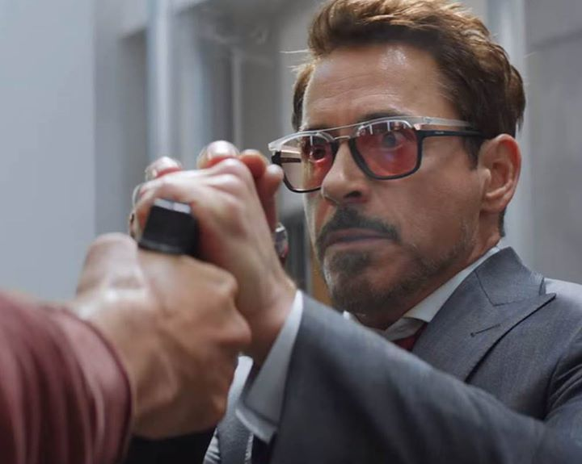
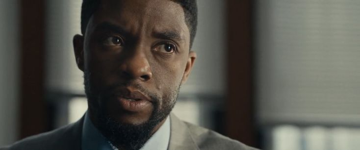
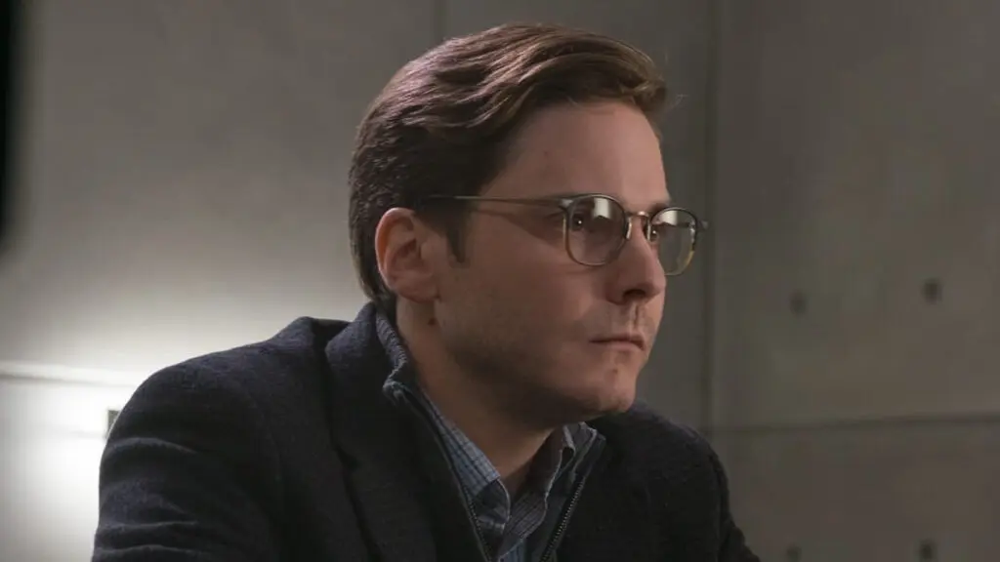

トニー・スターク / アイアンマン
協定署名派リーダー // 罪悪感に苛まれる社長
ウルトロンの件やソコヴィアでの犠牲に対する深い罪悪感から、アベンジャーズを国連の管理下に置く「ソコヴィア協定」への全面署名を主張。法を無視して親友バッキーを庇うスティーブと激しく決裂する。終盤、ジモの策略により「1991年12月16日」に両親を暗殺した犯人が洗脳状態のバッキーだった事実を知り、激情のまま最後の死闘へ身を投じる。
「何馬鹿な真似をやってるんだ。クリントを引きずり込んで、ワンダを安全な場所から無理やり引っ張り出して、なんでそんなに…なんでアベンジャーズを引き裂こうとするんだ」

スティーブ・ロジャース / キャプテン・アメリカ
協定反対派リーダー // 信念を貫く自由の象徴
「政治的な思惑によって救えるはずの命が救えなくなる」と考え、政府の統制を拒否して協定への署名を拒絶。爆破テロの濡れ衣を着せられた親友バッキーを組織の抹殺命令から守るため、自らも法の指名手配犯となる道を選ぶ。トニーとの友情を大切にしつつも、バッキーを守るために盾を振るう。
「君が引き裂いた。」

ティ・チャラ / ブラックパンサー
ワカンダの若き新国王 // 復讐に燃える黒き豹
ウィーンの国連爆破テロにより、偉大な父ティ・チャカ国王を失う。容疑者とされたウィンター・ソルジャー（バッキー）を自らの手で仕留めるため、ワカンダの機密であるヴィブラニウム製の漆黒スーツを纏い、キャプテンらの前に立ち塞がる。復讐の連鎖の虚しさを最後に悟り、真の犯人を見据える。
「私の国では死は終わりではない」

ヘルムート・ジモ
ソコヴィアの元暗殺部隊員 // 帝国を崩壊させた男
ソコヴィア決戦の戦火によって最愛の家族を失った男。超人パワーを持たない生身の人間でありながら、アベンジャーズを内側から「瓦解」させる精緻な復讐計画を立案。国連爆破テロを起こしてバッキーに罪を擦り付け、ヒドラの洗脳技術でバッキーを操る。トニーやスティーブを基地へ誘導し、歴史の闇に隠された暗殺映像を突きつける。
「息子ははしゃいでたよ。車の窓からアイアンマンが見えるって。私は妻に言った。大丈夫。戦いは街の中だけだ。だいぶ離れてる。でも土埃が収まり、人々の叫びが静まった後、…２日もかかったよ。家族の遺体を見つけるのに。」